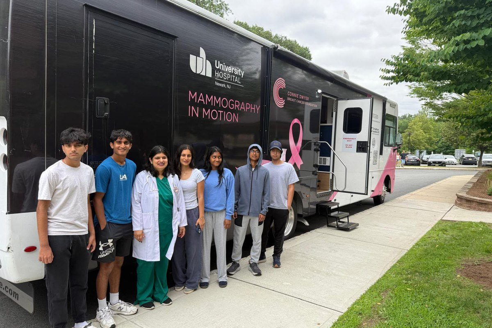
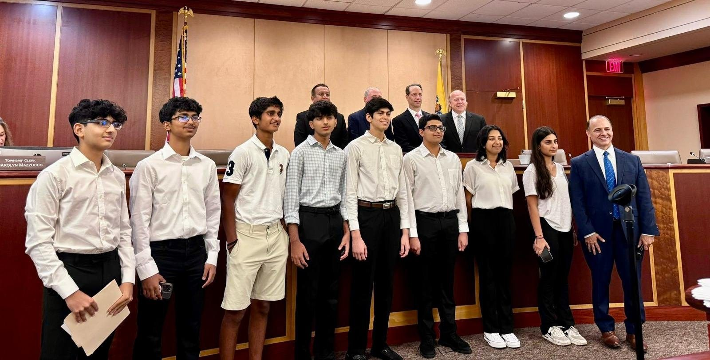
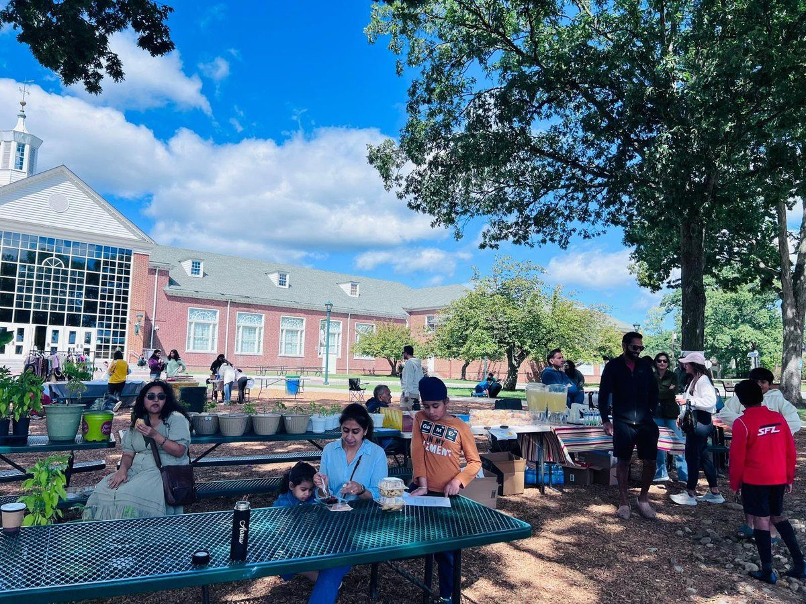
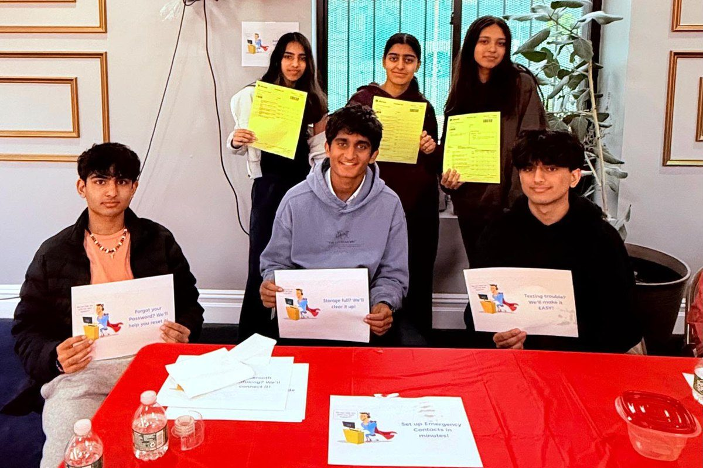
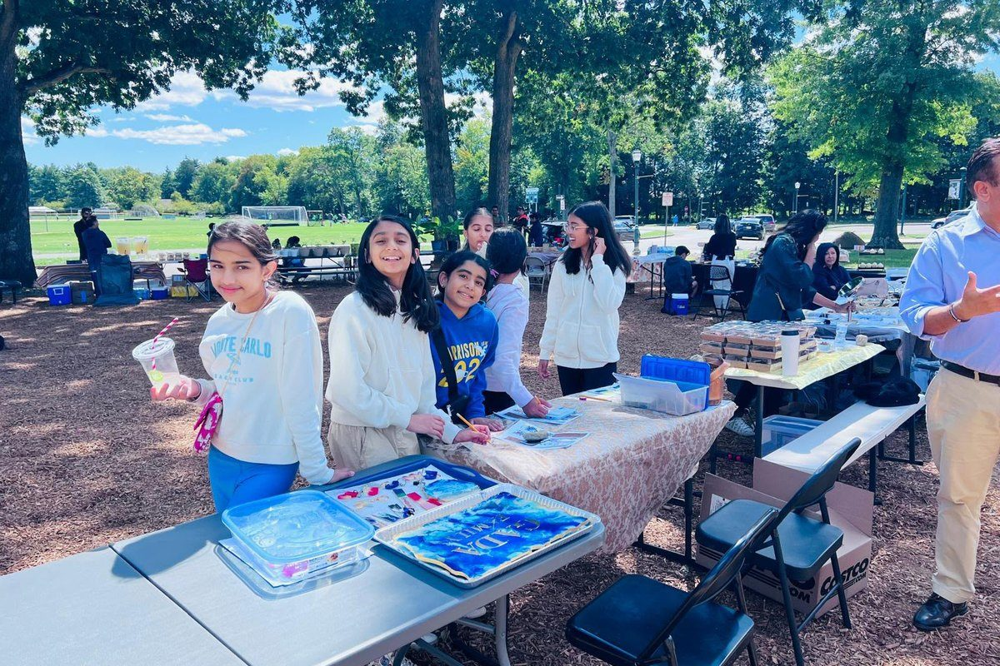

2025 · Health
Health Screening Camp
A free clinic on 27 June with Let's Save Ma, GKHET, and the Livingston Lions Club, plus a mobile mammography unit. 325 screenings in one day.
We are middle and high school students from Livingston, New Jersey who believe no one is too young to make a difference. Five years, eleven projects, and more than $30,000 raised and donated for people who needed it.


Livingston Youth Leaders started in May 2021, when a group of Livingston students heard about India's oxygen shortage during the peak of COVID-19 and decided a bake sale was better than doing nothing. It raised and donated $8,150.
Since then we have grown into a year-round group organizing fundraisers, supply drives, and free health clinics. Every project is planned, staffed, and run by middle and high schoolers. The goal is simple. We promote philanthropy among young people and build the next generation of community leaders.
Read our full storyService that counts for something, for your community and for you.
Every dollar we raise goes to a specific, named cause. Cancer screenings, food pantries, disaster relief. Nothing disappears into overhead.
Students plan the events, manage the budgets, and pitch the partners. You will run things, not just staff a table.
Work alongside students from across Livingston who care about the same things you do, planning together, solving problems together, and building friendships that outlast any one event.
Leadership positions open up every year, from fundraising and partnerships to finance and social media. You take on responsibility, not just a shift.
Most recent first, from a full calendar of drives and clinics back to the bake sale that started it.
A few highlights. The full archive lives on our projects page.

A free clinic on 27 June with Let's Save Ma, GKHET, and the Livingston Lions Club, plus a mobile mammography unit. 325 screenings in one day.

22 senior citizens, one afternoon, and a lot of patience. Phones fixed, scams spotted, and free vitals checks at Kearny Hindu Temple.

Food stalls, a silent auction, a car wash, and a book drive outside Livingston High School. $5,872 raised and donated for Bridges Outreach and the Livingston Education Foundation.
“Helping one person might not change the whole world, but it could change the whole world for one person.”
Radiate Kindness, the idea we started withOur projects reach further because of the groups who partner with us.
Our first partner. Together we sent oxygen concentrators and BiPAP machines to India during the 2021 COVID-19 crisis, and we have collaborated on health projects since.
Free breast cancer screenings and mammography access for women who would otherwise go without.
Co-organized our 2025 health screening camp, providing vision and hearing testing at no cost.
Support for people experiencing homelessness across New Jersey and New York.
Distributes the hygiene kits and essentials we assemble to individuals and families in need.
Funds programs and resources for students in our own school district.
Delivered the humanitarian aid funded by our 2022 Food and Art Fair to families displaced by the war.
Carried the backpacks and school supplies from our 2021 drive to children in Ethiopia.
Whether you are a student who wants to join, a parent who wants to help, or a business willing to sponsor a project, we would like to hear from you.